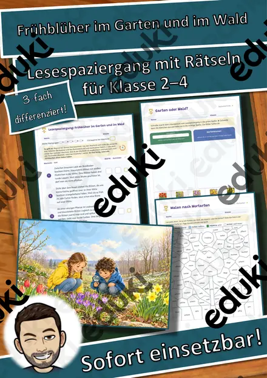
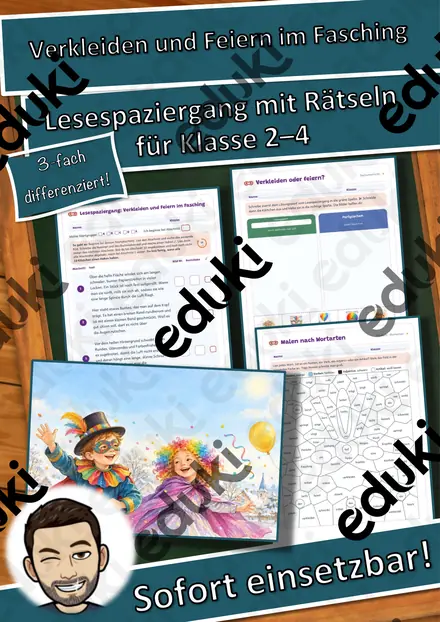
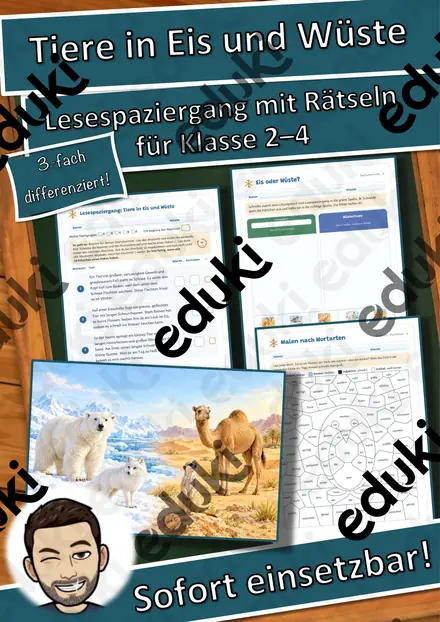
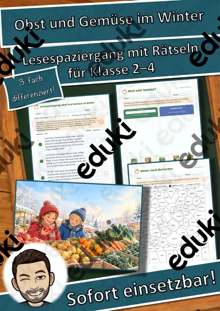
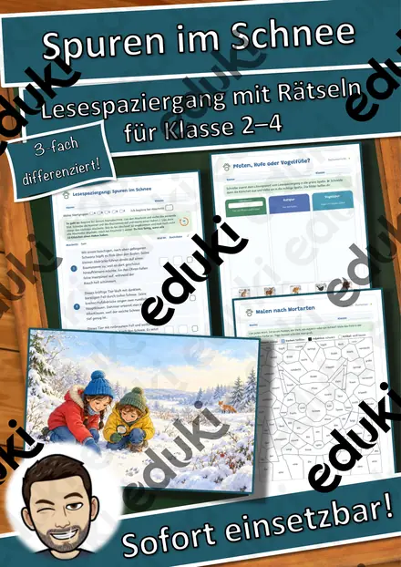
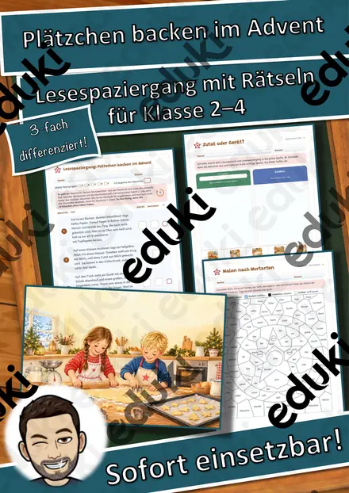
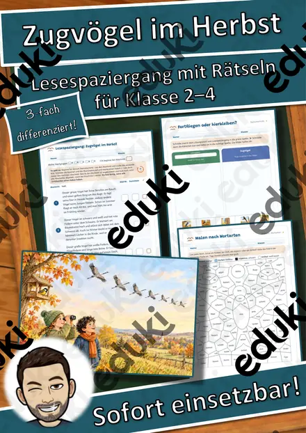
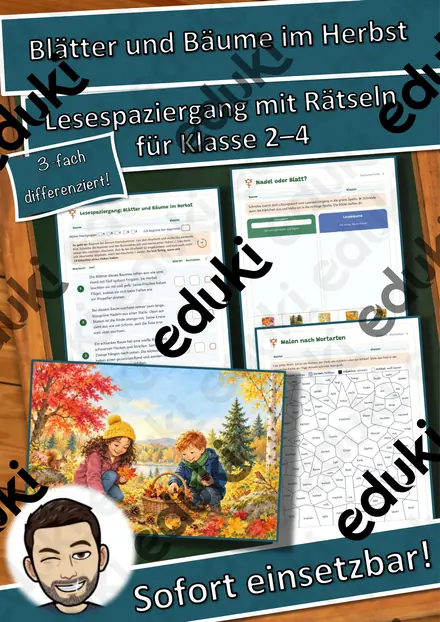

Lesespaziergang: Tiere im Winterwald – 3-fach differenziert (★/★★/★★★), Klasse 2–4
Lesen, laufen, entdecken: Bei diesem Lesespaziergang lesen die Kinder kurze Texte über zehn heimische Tiere im Winter und suchen im Raum die passende Bildkarte. Die Buchstaben auf den Karten ergeben ein Lösungswort – so kontrollieren sich die Kinder selbst.
Das Besondere: Das Material ist 3-fach differenziert (★ / ★★ / ★★★), jede Stufe mit eigenem Lösungsblatt. Die Lesetexte reichen vom kurzen Satz bis zum Rätseltext „Wer bin ich?“ und passen alle zu denselben Bildkarten.
Das ist enthalten (100 Seiten, A4):
- 4 Seiten Lehrerinformation: Ablauf, Startgruppen, Differenzierung, Sachinformation, Lehrplanbezug, Stundenverlauf und Gesprächsimpulse
- 10 farbige Bildkarten (A4) mit eigenen Illustrationen: Igel, Eichhörnchen, Fuchs, Rotkehlchen, Reh, Frosch, Feldhase, Siebenschläfer, Dachs und Braunbär
- Wortkarten zum Anheften in drei Fassungen: mit farbigem Artikel, mit Silbenbögen, ohne Artikel – plus 4 Begriffskarten zu den Überwinterungsformen
- Regelplakat und Startgruppen-Kärtchen A–E mit Laufweg
- Arbeitsblatt in 3 Lesestufen (★ / ★★ / ★★★) mit Startabschnitt, Abhak-Kästchen und „Ich kann …“-Leiste
- Hörtext per QR-Code für ★ und ★★ (Hörseite ohne Werbung)
- Lernpass „Mein Winterwald-Pass“
- Zusatzmaterial, je 3-fach: Wie überwintern die Tiere?, Spurensuche im Schnee, Silbenrätsel, Wortbild-Rätsel, Sätze bauen, Malen nach Wortarten (4/5/6 Wortarten), Lückentext, Kreuzworträtsel, Kreatives Schreiben „Eine Nacht im Winterwald“
- Ausmalbild für schnelle Kinder
- Lösungen zu allem
- Urkunde „Lese-Profi im Winterwald“ farbig und zum Ausmalen
Ideal für den Deutsch- und Sachunterricht im Winter, für Stationsarbeit, Vertretungsstunden und die Freiarbeit. Einfach ausdrucken, Karten aufhängen, los geht's!Die Illustrationen wurden mit KI-Unterstützung erstellt und von mir sorgfältig auf fachliche Richtigkeit geprüft.
Viel Freude beim Lesespaziergang!
Snice
Ähnliche Materialien

Lesespaziergang: Frühblüher im Garten und im Wald – 3-fach differenziert (★/★★/★★★), Klasse 2–4

Lesespaziergang: Verkleiden und Feiern im Fasching – 3-fach differenziert (★/★★/★★★), Klasse 2–4

Lesespaziergang: Tiere in Eis und Wüste – 3-fach differenziert (★/★★/★★★), Klasse 2–4

Lesespaziergang: Obst und Gemüse im Winter – 3-fach differenziert (★/★★/★★★), Klasse 2–4

Lesespaziergang: Spuren im Schnee – 3-fach differenziert (★/★★/★★★), Klasse 2–4

Lesespaziergang: Plätzchen backen im Advent – 3-fach differenziert (★/★★/★★★), Klasse 2–4

Lesespaziergang: Zugvögel im Herbst – 3-fach differenziert (★/★★/★★★), Klasse 2–4
